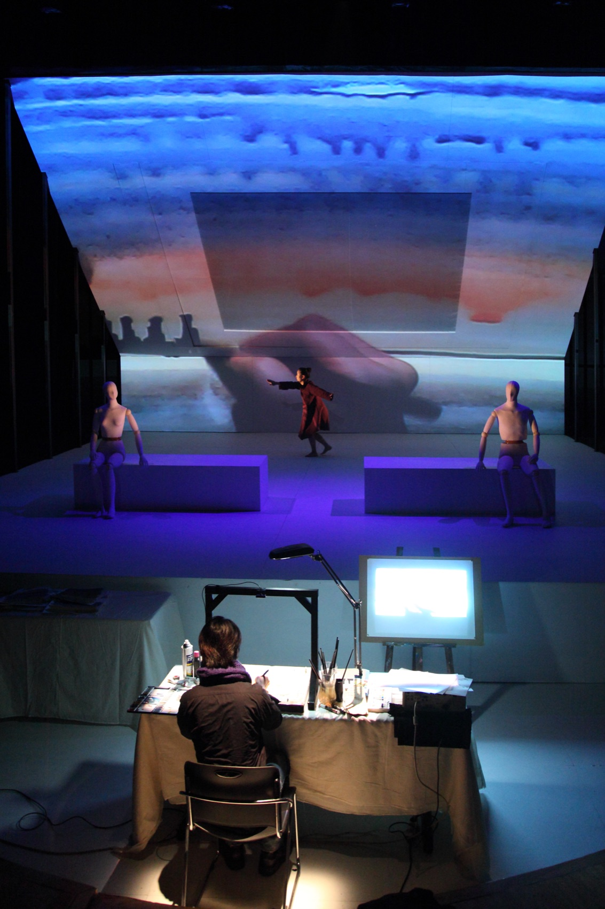
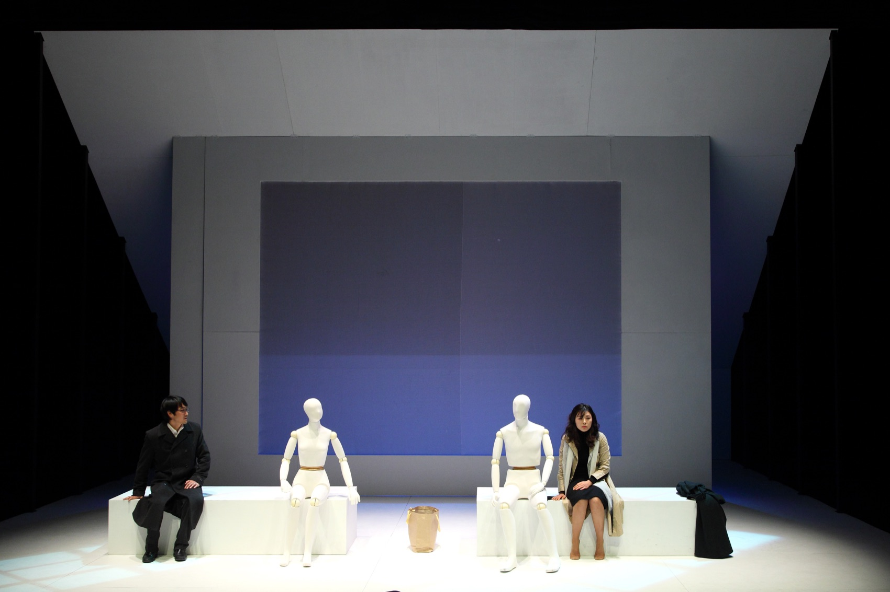
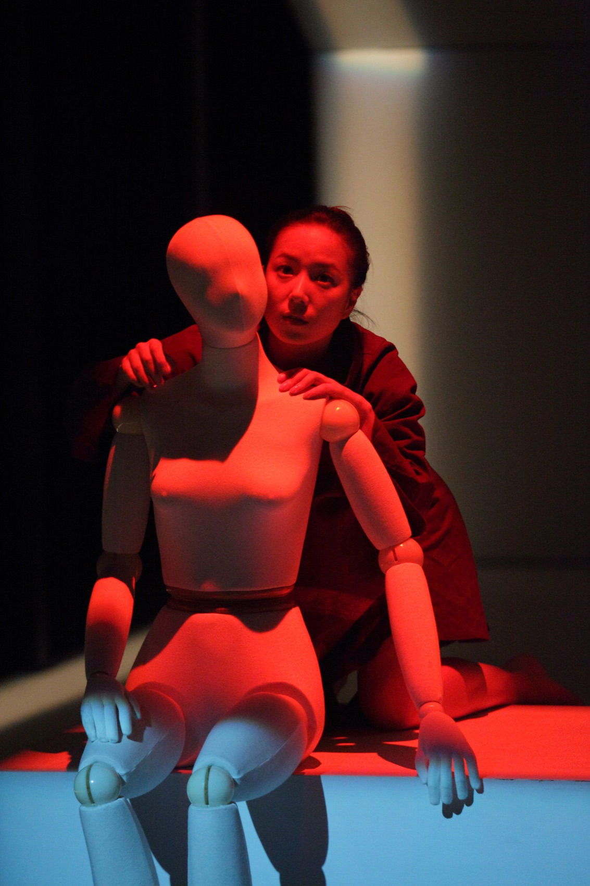
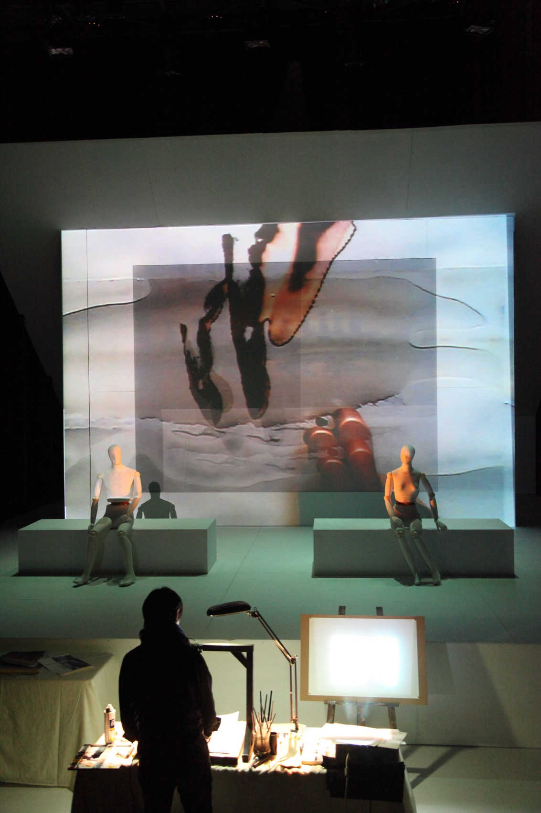

Performance — 2011
Winter겨울 · 욘 포세 · 극단 거미
욘 포세의 《겨울》 한복판에서, 준비 없이 떠나는 낯선 곳으로의 여행.
Into the middle of Jon Fosse’s Winter — an unprepared journey to a strange place.
음악적 과정을 닮은 혁신적 극작가 욘 포세. 그의 작품은 이야기를 전달하기보다 극 자체가 하나의 메타포로 작용합니다. 벤치에서 우연히 만난 두 남녀는 자신들도 모르는 사이 삶이 완전히 다른 곳으로 가고 있습니다. 자연스럽게 음악을 연주하듯 흘러가는 이야기는 지극히 일상적이지만, 어느샌가 우리를 낯선 곳으로 인도합니다.
무대에는 두 개의 구조가 병렬로 세워졌습니다. 한쪽에서 한 쌍의 남녀가 포세의 언어를 이야기하면, 다른 한편에서는 마임이스트와 드로잉 퍼포먼스가 3자적 시선으로 두 인물을 바라봅니다. 야외 건물에 영상을 입히는 프로젝션 맵핑 기법을 무대로 가져와, 드로잉으로 펼쳐진 공간에 가상의 레이어를 입혀 증강된 심미적 공간을 그렸습니다. 마임이스트는 말없는 화자를 넘어 차가운 겨울의 메타포로 형상화되어 두 인물의 심리를 대변하고, 섬세한 움직임은 서정적 드로잉·영상과 결합해 작품의 여백을 채색합니다.
Jon Fosse, the radical dramatist whose writing resembles a musical process: his plays work less by telling a story than by becoming metaphor themselves. A man and a woman meet by chance on a bench, and without knowing it their lives are already moving somewhere else entirely — an utterly ordinary story that flows like played music and leads us, at some point, into strangeness. The stage held two parallel structures: on one side the couple speaking Fosse’s language; on the other, a mime and a drawing performance watching them from a third position. Projection mapping was brought indoors, layering virtual imagery over a drawn space into an augmented, painterly scenography. The mime, more than a wordless narrator, was figured as the metaphor of cold winter itself, speaking the couple’s inner weather, her movement colouring the work’s empty spaces together with lyrical drawing and video.
- 원작
- Written by
- 욘 포세 (2023 노벨문학상)
- Jon Fosse (Nobel Prize in Literature, 2023)
- 연출·영상
- Direction & video
- 김제민 Kim Jae Min
- 출연
- Cast
- 홍승일 · 박병주
- 마임
- Mime
- 김소은
- 스태프
- Staff
- 기획 송희경 · 조연출 여기정 · 무대 봉하일 · 음악 김병제 · 의상 박정원 · 조명 피예경
- Producer Song Hee-kyung · assistant director Yeo Ki-jung · set Bong Ha-il · music Kim Byung-je · costume Park Jung-won · lighting Pi Ye-kyung
- 러닝타임
- Running time
- 80분
- 80 min
- 키워드
- Keywords
- Jon Fosse · mime · drawing · projection mapping
배경 — Festival 場
Context — Festival Jang
차세대의 축제, 부활한 場
A festival of the next wave
1997년 신진예술가들이 장르 간 협업을 위해 시작한 ‘젊은문화축제 場’은 2009년 남산예술센터 재개관과 함께 New Wave NArT 「Festival 場」으로 부활했습니다. 2011년 3회 축제는 ‘Contemporary & New Wave’를 컨셉으로 무브먼트 당당, 강화정, 팟저 프로젝트(라삐율), 달파란&병준, 상상만발극장(박해성) 등과 함께 극단 거미의 《겨울》을 마지막 작품으로 올렸습니다.
Begun in 1997 by young artists seeking cross-genre collaboration, the ‘Young Culture Festival Jang’ was revived as New Wave NArT ‘Festival Jang’ with the Namsan Arts Center’s 2009 reopening. Its third edition in 2011, under ‘Contemporary & New Wave,’ closed with Geomi’s Winter — alongside Movement Dangdang, Kang Hwa-jung, the fatzer-project (Lappiyul), Dalpalan & Byungjun, and Sangsangmanbal (Park Hae-sung).
- 연출 메모
- A note from rehearsal
- “화가는 왜 겨울을 그리는가? 현대인의 쓸쓸함을 느끼는 남자.” — 오후에는 마임과 페인터 작업, 저녁에는 드라마. 두 개의 트랙이 나란히 연습되었다.
- “Why does the painter paint winter? A man feeling the loneliness of the modern.” — Afternoons for mime and painter work, evenings for drama: the two tracks rehearsed side by side.
공연 기록 — 남산예술센터 드라마센터, 2011. 12.
Performance record — Namsan Arts Center Drama Center, Dec 2011


